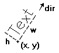
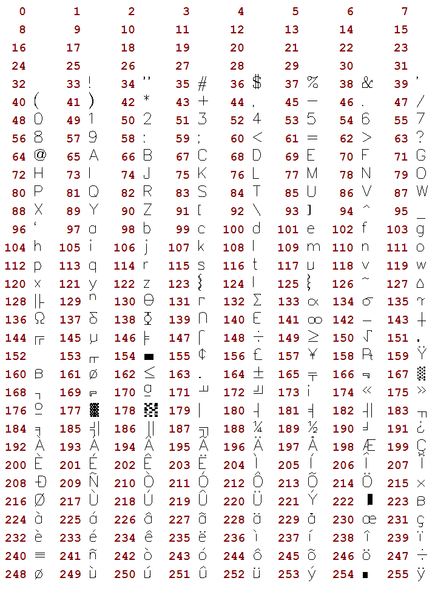
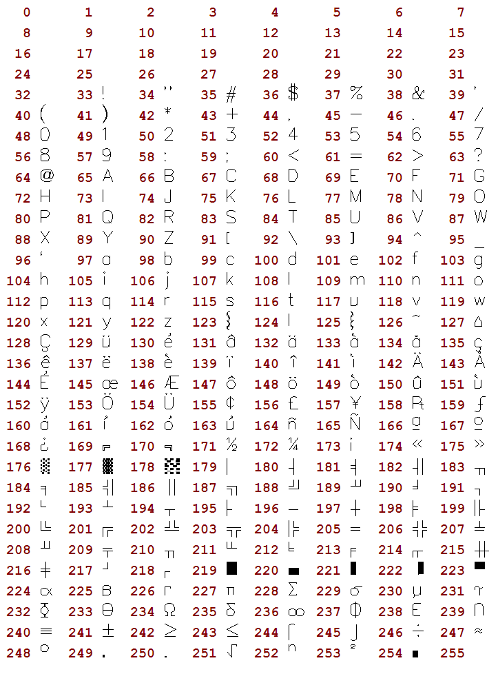

It is a text that uses a font created only with line segments. It is very useful to be scaled and very fast. You must set the text size before drawing any text. The default direction is horizontal from left to right.
Vector Text Parameters

All vector text drawing in all drivers are simulated with other CD primitives using polygons only.
void cdCanvasVectorText(cdCanvas* canvas, int x, int y, const char* text); [in C]
void wdCanvasVectorText(cdCanvas* canvas, double x, double y, const char* text); (WC) [in C]
canvas:VectorText(x, y: number, text: string) [in Lua]
canvas:wVectorText(x, y: number, text: string) (WC) [in Lua]
Draws a vector text in position (x,y), respecting the alignment defined by cdTextAlignment. It ignores the configuration cdBackOpacity, being always transparent. It accepts strings with multiple lines using '\n'. It is ESSENTIAL to call cdVectorTextSize or cdVectorCharSize before using this function.
The wdCanvasVectorText is the only function that actually depends on World Coordinates. The other Vector Text functions although use the "wd" prefix they do not depend on World Coordinates. They are kept with these names for backward compatibility. The correct prefix would be "cdf".
void cdCanvasVectorTextDirection(cdCanvas* canvas, int x1, int y1, int x2, int y2); [in C]
void wdCanvasVectorTextDirection(cdCanvas* canvas, double x1, double y1, double x2, double y2); [in C]
canvas:VectorTextDirection(x1, y1, x2, y2: number) [in Lua]
canvas:wVectorTextDirection(x1, y1, x2, y2: number) [in Lua]
Defines the text direction by means of two points, (x1,y1) and (x2,y2). The default direction is horizontal from left to right. It is independent from the transformation matrix.
double* cdCanvasVectorTextTransform(cdCanvas* canvas, const double* matrix); [in C]
canvas:VectorTextTransform(matrix: table) -> (old_matrix: table) [in Lua]
Defines a transformation matrix with 6 elements. If the matrix is NULL, no transformation is set. The default is no transformation. The origin is the left bottom corner of matrix. It returns the previous matrix, and the returned vector is only valid until the following call to the function.
The matrix contains scale, rotation and translation elements. It is applied after computing the position and orientation normal to the vector text. We can describe the elements as follows:
|x'| | scl_x*cos(ang) -sin(ang) trans_x | |x| | 3 4 5|
|y'| = | sin(ang) scl_y*cos(ang) trans_y | * |y| with indices | 0 1 2|
|1|
It has the same effect of the cdCanvasTransform, but notice that the indices are different.
void cdCanvasVectorTextSize(cdCanvas* canvas, int width, int height, const char * text); [in C]
void wdCanvasVectorTextSize(cdCanvas* canvas, double width, double height, const char* text); [in C]
canvas:VectorTextSize(width, height: number, text: string) [in Lua]
canvas:wVectorTextSize(width, height: number, text: string) [in Lua]
Modifies the font size of the vector text so that it fits the string in the box defined by width and height.
double cdCanvasVectorCharSize(cdCanvas* canvas, int size); [in C]
double wdCanvasVectorCharSize(cdCanvas* canvas, double size); [in C]
canvas:VectorCharSize(size: number) -> (old_size: number) [in Lua]
canvas:wVectorCharSize(size: number) -> (old_size: number) [in Lua]
Modifies the font size by specifying the height of the characters. Returns the previous value. CD_QUERY returns the current value.
void cdCanvasVectorFontSize(cdCanvas* canvas, double size_x, double size_x); [in C]
canvas:VectorFontSize(size_x, size_y: number) [in Lua]
Directly modifies the font size. Set size_x==size_y to maintain the original aspect ratio of the font.
void cdCanvasGetVectorFontSize(cdCanvas* canvas, double *size_x, double *size_x); [in C]
canvas:GetVectorFontSize() -> (size_x, size_y: number) [in Lua]
Returns the font size. It is not necessary to provide all return pointers, you can provide only the desired values and NULL for the others.
char* cdCanvasVectorFont(cdCanvas* canvas, const char *filename); [in C]
canvas:VectorFont(filename: string) -> (fontname: string) [in Lua]
Replaces the current vector font with a font stored in a file with a given name. Returns the name of the font loaded or NULL, if it fails. If filename is NULL, it activates the default font "Simplex II" (There is no file associated to this font, it is an embedded font). The library will attempt to load a font from the current directory, if it fails then it will try the directory defined by the environment variable "CDDIR", if it fails, it will attempt to load it using the filename as a string containing the font as if the file was loaded into that string, if it fails again the font is reset to the default font and returns NULL. The file format is compatible with the GKS file format (text mode).
void cdCanvasGetVectorTextSize(cdCanvas* canvas, const char* text, int *width, int *height); [in C]
void wdCanvasGetVectorTextSize(cdCanvas* canvas, const char* text, double *width, double *height); [in C]
canvas:GetVectorTextSize(text: string) -> (width, height: number) [in Lua]
canvas:wGetVectorTextSize(text: string) -> (width, height: number) [in Lua]
Returns the text size independent from orientation. It is not necessary to provide all return pointers, you can provide only the desired values and NULL for the others.
void cdCanvasGetVectorTextBounds(cdCanvas* canvas, char* text, int x, int y, int *rect); [in C]
void wdCanvasGetVectorTextBounds(cdCanvas* canvas, char* text, double x, double y, double *rect); [in C]
canvas:GetVectorTextBounds(text: string, x, y: number) -> (rect: table) [in Lua]
canvas:wGetVectorTextBounds(text: string, x, y: number) -> (rect: table) [in Lua]
Returns the oriented bounding rectangle occupied by a text at a given position. The rectangle has the same dimentions returned by GetVectorTextSize. The rectangle corners are returned in counter-clock wise order starting with the bottom left corner, arranged (x0,y0,x1,y1,x2,y2,x3,y3).
void cdCanvasGetVectorTextBox(cdCanvas* canvas, int x, int y, const char* text, int *xmin, int *xmax, int *ymin, int *ymax); [in C]
void wdCanvasGetVectorTextBox(cdCanvas* canvas, double x, double y, const char* text, double *xmin, double *xmax, double *ymin, double *ymax); [in C]
canvas:GetVectorTextBox(x, y: number, text: string) -> (xmin, xmax, ymin, ymax: number) [in Lua]
canvas:wGetVectorTextBox(x, y: number, text: string) -> (xmin, xmax, ymin, ymax: number) [in Lua]
Returns the horizontal bounding rectangle occupied by a text at a given position. If orientation is not 0 then its area is always larger than the area of the rectangle returned by GetVectorTextBounds. It is not necessary to provide all return pointers, you can provide only the desired values and NULL for the others.
The old GKS format contains ASCII codes so a convertion from ANSI to ASCII is done when possible, unmapped characters are left unchanged, but some rearrage was necessary to acomodate the convertion.
The default vector font was changed from the original Simplex II to contain all ANSI accented characters. So some ASCII characters were replaced.
Bellow is the character code table of the default font.

Default Font
The original Simplex II font is available in the file "cd/etc/vectorfont00.txt". Bellow is the character code table of the original font (the table displays the characters after the convertion from ANSI to ASCII):

Original Simplex II